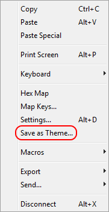
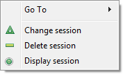
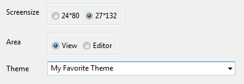
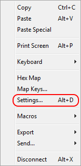
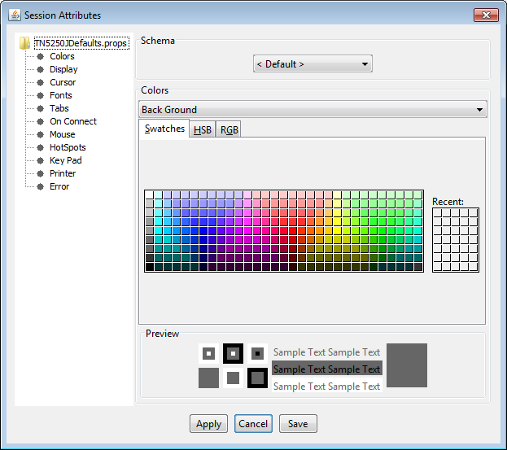

A session theme is used for overriding the default session colors with the colors of the theme. This way you can use different colors for your sessions, while keeping all other session attributes, such as the keyboard layout, the same.
| The theme configuration files are stored in folder %USERPROFILE%\.tn5250j and named *.theme where the asterisk equals the name of the theme. |
Start with opening a 5250 session when you want to create a new theme. Then tweak the color attributes to match your needs. Eventually open the session context menu and select "Save as Theme..." to save the current color composition to a theme configuration file:

Themes are assigned to a session on the session configuration dialog.
Right-click on an "iSphere 5020 Session" and select the "Change session" option:

Select a theme from the "Theme" combo box:

Select option *NONE if you do not want to use a theme for this session.
Eventually click the [OK] button to save the configuration.
Select option "Settings..." from the context menu of a 5250 session to open the Session Attributes dialog. Select Colors to change the color attributes of the session:
|  |  |
Click the "Apply" button for each color that you have changed. Save the settings when you are done.